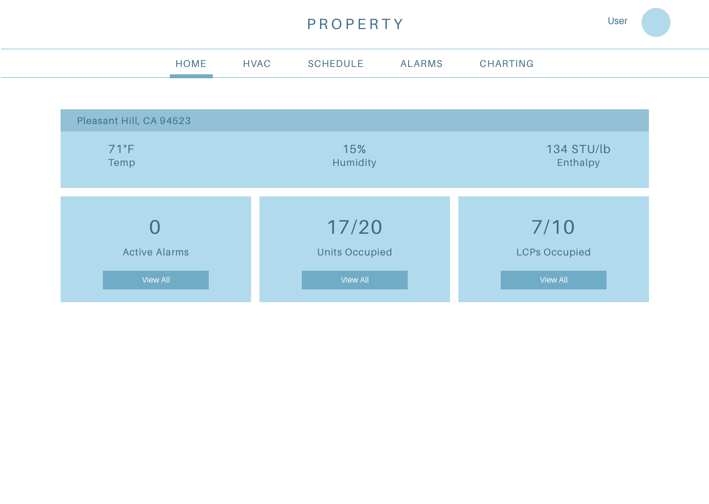
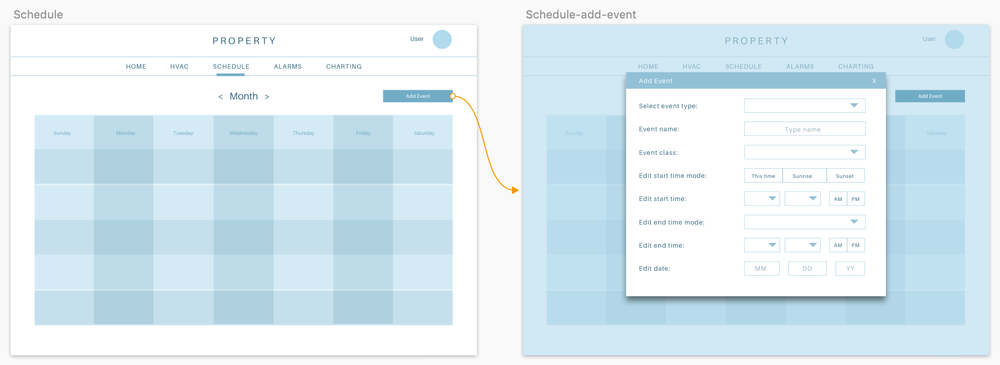
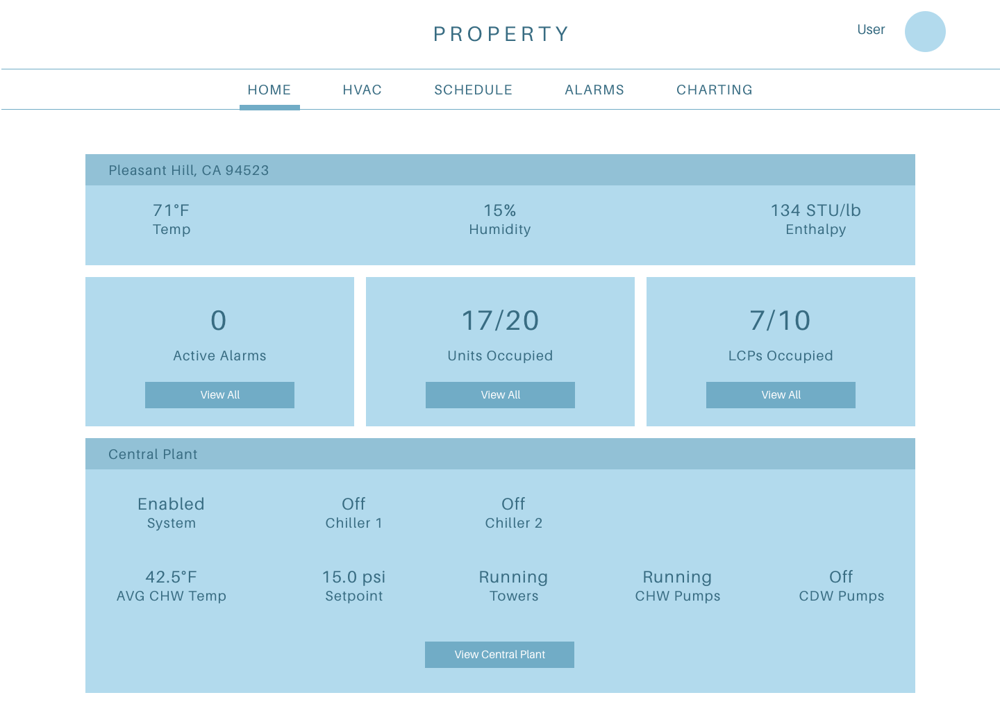
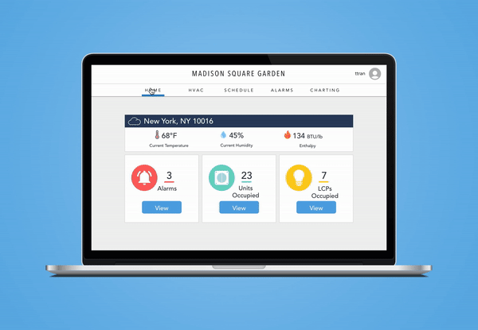

Controlco: IoT Web App
Enterprise platform allowing for buildings IoT analytics and
controls
Trang Tran

About Controlco
Controlco brings together building systems and networks through a web-based IoT app that lets users control their facility operations. The app consists of data visualizations and HVAC systems where settings can be changed to maintain favorable temperatures and conditions in commercial buildings.
The Problem
Before I came on, there was no user-centric design, and as a result, users were left with a Frankenstein product that met the bare minimum of being functional. Features were being added without truly empathizing with users and understanding their stories. After receiving enough feedback from users about how "primitive" our app was, the VP of Product made a commitment to improve our design and overall experience for users.

The old Controlco app which was built without designers.
As the sole UX designer in the company, I led the redesign efforts with a team consisting of a product manager, front-end engineer, and systems engineer. In this role, I also conducted interviews with external and internal users.
Who Are the Users of the Controlco App?
The power users are field/ops technicians who are responsible for maintaining the HVAC conditions within high-rise commercial buildings. The type of people in such positions are mostly males between their 30 - 60s and come from blue collar backgrounds. In my experience working within the industry, I've learned that most of our users are limited in their knowledge of modern technologies in web and mobile.
Persona: The Field Technician

47 years old
Field technician
James logs into the app daily to make sure that the equipment is okay. He tends to create schedules and change settings in certain air handler units. James has to manually count how many units are offline, online, etc. Then he'll go and change the temperature setpoints and override certain settings.
Wants high level view of system statuses when logging in so he can perform job faster.
Needs clear directions to do tasks. Does not like complicated software and having to learn new things. Loves to poke fun at millennials.
Observing Users in Their Environment
I reached out to two users from the shared workspace company whom we are building for. Through RingCentral video calls, the PM and I were able to observe the behavior from watching their screens.
As users were talking me through what they do on the app, they also specified certain pain points. Right when a user logs in, the first screen they see is supposedly the "homescreen", but is actually a duplicate of the HVAC screen. The users said that they didn't have a high-level view of their entire system's health, so they would click page by page to see the status of each individual unit. Users also pointed out that creating a schedule was tedious because there were many clicks involved due to our use of dropdowns for picking between AM and PM, for example.

Inconsistent fonts and colors were being used without any user-driven reasoning.

There were incorrect uses of modals, dropdowns, etc.
The User's Concern
While users called out the product's bad visual design choices and clunky experience, they also made it clear that they did not want something drastically different and "flashy". Learnability was especially a concern for them because they are not a technical audience. My response was that the redesign would simplify the processes and reduce the effort needed to get their jobs done.
Understanding the User's Goals
After conducting the research, I synced with the PM to finalize what the enhancements should be in order to help users. Our insights led us to these user goals:
Users are able to complete their day to day tasks, but not without frustration. They are spending more effort than they should because our product was not designed in a way to be efficient for users.
Ideation
In order to help users, the biggest action item we proposed was to design a homepage that will show all the high-level data points. What we didn't want to do was remove all things familiar to the user. Some of the pages would require a facelift, while only a few would require a full on redesign. I went through the existing app and audited interaction patterns that need improvements.
Homepage Lo-fi Wireframe
I produced a wireframe of the homepage to show how many units are offline/online/faulty. There were other important KPIs like temperature and humidity which users specifically asked to see. This allows users to see the most useful bits of information immediately without having to sift through everything to find out what's wrong.
The homepage which would autopopulate the data points for any facility.
Enhanced Schedule Creation Lo-fi Wireframe
The enhanced schedule creation screens.
Some interaction patterns have been changed on the Schedule screen so that there was better information architecture and surfacing of important items. These patterns were also implemented in some of the pages for a facelift.
Reiterating on the Homepage
I met with the engineers and PM to talk about the wireframes to ensure that the design was within reason with our given timeline and bandwidth. There were no challenges on either end, but I found out from the PM that this client is integrating another facility that has a central plant. We would need to redesign the homepage to scale and reflect other properties that contain such systems. I received input from the PM about what data points they would want to see regarding the central plant and made the changes in my designs.
The second version of the homepage. If a facility has a central plant (heating or cooling), the backend would detect those data points and auto-populate on the UI.
Visual Design
Since we didn't have a unified design guide in place, I explored some options for our color palette and type. I had some proposals from the VP, saying specifically that the app should be a lighter interface since many of our other products use dark blues. We couldn't think of a scenario where that would be an issue, so we went ahead with the proposal. I was careful to make sure that none of the colors would coincide with the current colors we were using for statuses, and that everything had enough contrast to be readable.
We tested several typefaces, but ended up using Avenir Medium for body content because of its scalability on the mobile version. Avenir Condensed was used for styling our labels.
Testing Out the New Product Interface
After we reviewed the build internally with no issues, we rolled it out the customer. To test out the workflow of the most common user scenarios, I ran a few guerrilla-styled usability tests with some of the technicians. I recruited six participants and had three of them perform tasks on the old interface, while the three participants performed the same tasks using the new design.
The users were to do the following:
For user using the legacy system, the average time it took to complete the two tasks, respectively, were 2.44 seconds and 25.32 seconds. For the new interface, users completed the tasks in 1.02 seconds and 20.21 seconds. Although by a small margin, users completed their common tasks faster with the newly redesigned interface.
The final design for the facility without a central plant.
How can we improve the workflow for our users so they can do their jobs with optimal satisfaction and with the least amount of time?
Interviewed users to learn about journey and pain points
Brainstormed idea for homepage/dashboard
Learned about facility's integration of central plant and redesigned homepage to reflect that
Focused on aesthetics to create delightful experience
Took about two weeks of UX effort (ideation, user interviews, prototyping, reiteration) and one month for engineering to build out
Did usability test with six customers and concluded that new interface outperformed the old
A New Look For Controlco Products
The final product was warmly received by all stakeholders (VP, engineering, data modelers, and users). People said that it was much easier to use, and that the redesign made the app much more "pleasant" to deal with. One data modeler even said that the new interface was "Apple-like" and reminded him of his daughter's iPad game. The customers ended up using this design as the standard for all enterprise level projects in their portfolio.
The Takeaway
I felt that Controlco made an earnest effort to integrate user-centric design approaches and testing methods by allowing me to take the project from end to end. The VP regarded it as a shift towards a new paradigm of Controlco's products. If given another opportunity to revisit the product, I would have focused on the microinteractions involved navigation and configurating on the HVAC specific-pages.